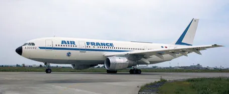
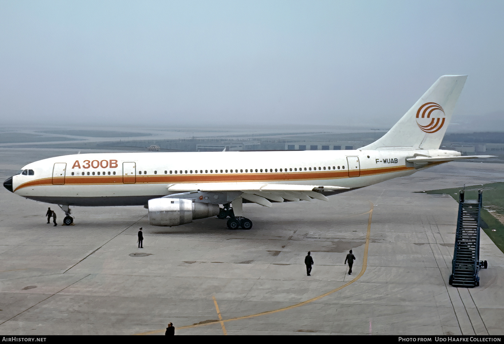
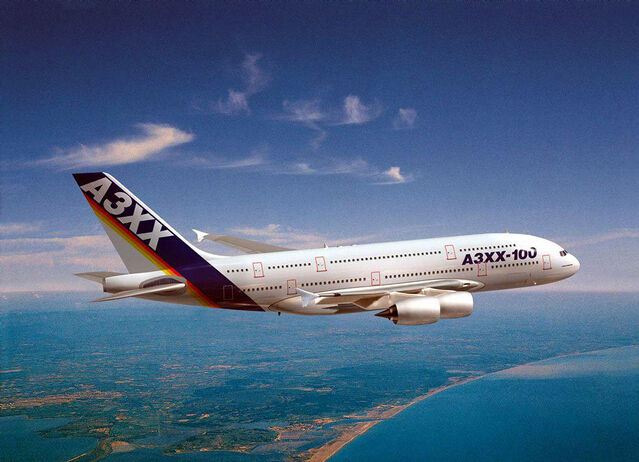
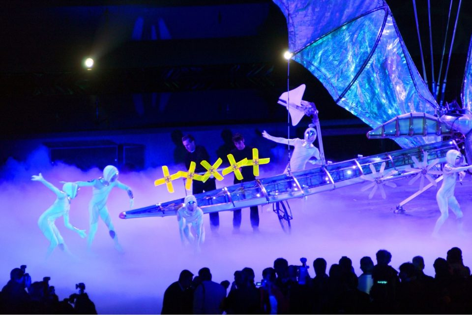
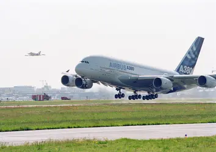

Cette page n'est pas finie et est en développement
L'histoire d'Airbus
Airbus, aujourd'hui un des plus grands constructeurs aéronautiques du monde, principal concurrent de Boeing, est une entreprise européenne fabriquant certains des meilleurs avions du monde
L'avant Airbus
Dans les années 1960, l'aviation voyait arriver la technologie des avions à réaction, notamment dans le transport de passagers avec le Boeing 707 ou le Douglas DC-8, ce qui a ouvert la porte à des vols transtlatiques d'une manière plus rapide et accessible
En Europe l'aviation n'était pas très présente dans le domaine des grands avions longs-courriers, jusqu'à l'arrivée du Concorde, dont le premier vol eu lieu le 2 mars 1969. Cet avion fut le premier, et jusqu'à aujourd'hui, le seul avion de transport de passagers supersonique, il commenca sa carrière commerciale en 1976, le certificat de navigabilité sera suspendu et remis en cause en 2001, après le crash de l'appareil F-BTSC à Gonesse, le 25 juillet 2000

Le premier Airbus
Le lancement du programme
Les deux constructeurs du Concorde (Sud Aviation et British Aircraft Corporation) ont fusionnés pour devenir Aerospatiale, les dirigeants de cette entreprise décident de lancer un nouveau programme, capable de concurrencer les Boeing, dont le 777. C'est ainsi que le programme "Airbus" fut créé, le futur avion était censé être un avion de ligne moyen ou long courrier d'environ 300 places, c'est de là dont viendra le nom A300, pour Airbus 300 passagers.

Le développement
L'ancêtre de ce projet était nommé Galion et était développé par Dassault et Sud Aviation dans les années 1960, l'accord initial était de développer deux avions séparés. Le premier était un moyen-courrier de 300 places, qui finit par être la base du développement de l'Airbus. Le second était un court courrier d'environ 150 places.
Les américains développant des avions plus grands comme le DC-10 ou le B747, Dassault se retire du projet mais continue néanmoins à développer l'avion court-courrier, ce qui donna plus tard le Mercure 100, qui fut un échec. Sud Aviation s'associa à Hawker-Siddeley, qui était un de ses partenaires dans le développement du Concorde, ils seront finalement remplacé par des industriels allemands.

L'industrie aéronautique allemande commencait à renaitre de la seconde guerre mondiale, étudiait depuis un certain temps un avion moyen courrier de 300 places, similaire au projet de Sud Aviation. Les constructeurs Nord Aviation, Breguet et Hawker Siddeley avaient également commencé à étudier des projets similaires, le produit final, l'Airbus A300B est souvent considéré commme un mélange de ces trois projets.
Problèmes de motorisation
En 1968, l'avion, à ce moment à un stade plutôt avancé de la conception, était censé aborder les moteurs Rolls Royce RB207, une publicité était apparue dans le magazine Aviation week & space technology. Dans cette publicité, l'avion est présenté comme Airbus International (association de Sud Aviation, Hawker Siddeley Aviation et Deutsche Airbus) et son titre est "C'est le début de quelque chose de grand"

En mai 1968, Roger Beteille, un des "fondateurs" d'Airbus apprend que Rolls Royce, ne développera finalement pas le RB207 mais le RB211, moins puissant pour le Lockheed Tristar, un trimoteur britannique. Airbus décida finalement, en décembre 68, de se contenter du RB211. Rolls Royce, pensait que le Lockheed aurait plus de succès que l'Airbus et quitta le projet (l'histoire montrera qu'ils avaient tort) et l'Airbus se retrouve alors sans moteur, c'est à ce moment que General Electrics se présenta avce le CF6-50, de la même puissance que le RB211, conçu initialement pour le DC-10. L'avion fut donc raccourci et renommé A300B
Le Royaume Uni se retire du projet, ce qui aurait du causer le fin du programme, mais le gouvernement allemand pensait qu'il s'agissait d'une occasion unique pour l'industrie allemande de retourner sur le marché des avions civils après l'interdiction précédant la seconde guerre mondiale. Une forte pression fut exercée par le gouvernement allemand sur le gouvernement français, le principal soutien de cette initiative est Franz Josef Strauss. Le dirigeant d'Hawker Siddeley, Arnold Hall, a été remarqueble car il est resté dans le programme, c'est comme cela que son entreprise se vit confier la tâche de la fabrication des ailes, la seule chose manquante restait 35 milliards de livres, fournis par le gouvernement allemand.
La production débute
La production sera officiellement lancée le 29 mai 1969 avce la signature des ministres français Jean Chamant et Karl Schiller, durant le Salon Aéronautique du Bourget. La société créé le 18 décembre 1970 afin de fabriquer l'avion fut Airbus Industries, comme son nom l'indique, c'est aujourd'hui la société Airbus.

A cette époque, les plus grandes compagnies s'interessant au programme de l'Airbus sont Air France, Air Inter, Lufthansa et British European Aiways (British Airways), il est dévenu évident que les besoins d'Air France concernaient des avions plus grands que le programme en cours, c'est pour cette raison que le programme de l'A300B2, une version plus grande de l'A300B, a été créée. Cette version devrait être capable de transporter jusqu'à 270 passagers. L'intention d'achat pour six premiers exemplaires, fut signée le 3 septmbre 1970.

Première présentation et Premier vol
La première présentation publique du premier appareil, de MSN 001 (Manufacturer Serial Number) aura lieu le 28 septembre 1972 à Toulouse, l'appareil est immatriculé F-WUAB et porte déjà sa livrée définitive, il est par ailleurs un des deux seuls avion à porter cette livrée (peinture) avec le MSN238, qui la porte avec la même immatriculation au musée Aeroscopia.

Le premier vol de l'A300B a eu lieu à Toulouse, le 28 octobre 1972, un mois plus tôt que prévu sur le planning, même si les ventes de l'appareil ne commencaient toujours pas rééllement, le directeur des essais nommé est Bernard Ziegler
Certifications et tournées de démonstration
Dans les années 1973 et 1974, l'A300B lors de tournées de démonstrations tout autour du globe afin de le promouvoir auprès des compagnies potentiellement clientes. Le pays le plus concerné par ces démonstration est les Etats Unis, car il s'agit, depuis le lancement du programme, d'un des marchés potentiels de l'A300.
La seconde version disponible de l'appareil, l'A300B2, a obtenu sa certification le 15v mars 1974 par les gouvernements français et allemands. La certification en Amerique sera donnée le 30 mai 1974, permettant d'utiliser l'appareil en outre-atlantique
Mise en service
La première compagnie à utiliser l'avion de manière commerciale est Air France, sur un vol Paris-Londres. Ce vol fut un vol remarquable, car il s'agit du premier vol d'un biréacteur à double couloir et d'un avion utilisant des matériaux composites, ce vol a eu lieu le 23 mai 1974.
Démantèlement du premier prototype
Le premier appareil, immatriculé F-WUAB lors de sa construction puis immmatriculé F-OCAZ, a été démantelé le 27 aout 1974, l'appareil n'aurait pas pu être reconverti en avion de ligne car il était, semblait il, très différents des appareils de production. Auourd'hui, il reste très peu de photos de cet avion.
Manque de commandes en 1976
En 1976, le carnet de commande comptait seulement 33 commandes fermes et 23 options, venant d'Europe et d'Asie, cela signifie qu'une partie des commandes fermes viennent de pays obligés d'acheter des avions de fabrication locale (dont Air France, la compagnie de lancement et British Airways principalement), 16 exemplaires avaient également été construits mais demeuraient invendus.
Le plus grand Airbus
Le besoin de concurrencer le B747
En 1968, Boeing a présenté au public le Boeing 747-100, un avion capable de transporter 366 passagers dans sa version classique, et 452 au maximum. A cette époque, le 747 était le plus grand avion du monde, sa particulérité principale était sa bosse au dessus du nez, le but de ce second étage était, dans la version cargo de l'appareil, d'avoir une porte à l'emplacement du nez de l'appareil.

Développement
A ce moment, Airbus n'existait pas, et la société Sud Aviation (devenue Aerospatiale dans le futur) était loin de concurrencer Boeing, à ce moment, le seul Airbus en projet était l'A300B, qui était seulement au début de son développement.
Dans les années 1990, quand l'entreprise Airbus concurrence tous les modèles de Boeing sauf le 747, une étude de marché a été effectuée et a révélée que un concurrent "airbusien" du Boeing 747 était une bonne idée, c'est pour cela que le développement du programme A3XX commença, cet avion était censé pouvoir se poser à quasiment toutes les destinations déservies par le 747, avoir une meilleure conssomation de carburant et transporter plus de personnes que le Boeing.
Développement de la logistique
Au début des années 2000, le programme était bien avancé et le 747 était produit dans sa version 747-400 et son avenir n'était pas certain, Boeing pouvait en arrêter la production car les ventes baissaient, au profit des biréacteurs "modernes", dont le premier aura été l'Airbus A300B.
A ce moment là, tous les avions Airbus étaient fabriqués par plusieurs pays européens, notamment la France, l'Allemagne, l'Espagne et l'Angleterre, il a donc fallu instaurer un système dans lequel tous ces pays contribuent à la construction des appareils. La décision finale fut que :
- Les ailes seront fabriquées en Angleterre
- L'empennage sera fabriqué en Espagne, à Madrid
- Le fuselage avant et central sera fabriqué à St Nazaire et Nantes
- Le fuselage arrière sera fabriqué en Allemagne
- L'assemblage final (la FAL) aura lieu à Toulouse, dans l'usine Jean Luc lagardère, le troisième plus grand batiment du monde, derrière la Boeing Everett Factory et la Great Mosque of Mecca
Fabrication du premier exemplaire
La fabrication du premier exemplaire commenca en mai 2004, sur la FAL (Final Assembly Line = ligne d'assemblage final) de Toulouse, le premier vol était initialement prévu pour la fin de premier trimestre de 2005 et le lancement commercial par Singapore Airlines en 2006. Trois retards causant un retard de 18 mois, principalement à cause d'un problème de câblage éléctrique car les usines allemandes utilisaient une version 2D des logiciels de visualisation, contrairement à la version 3D plus récente utilisée par les autres pays, les câbles livrés à Toulouse se sont donc retrouvés bien trop courts pour la fin de la construction.

Première présentation officielle de l'A380
L'A380 fut le premier à arborer la nouvelle identité visuelle d'Airbus (visibles sur les photos suivantes, l'A320 porte l'ancienne livrée et l'A380 la nouvelle), elle a été dévoilée le 18 janvier 2005, dans l'usine Jean Luc Lagardère où il a été fabriqué.


Lors de cette présentation, plus de 5000 invités étaient présents, dont Jacques Chirac, Gerhard Schröder, Tony Blair, José Luis Zapatero, ... La particularité de cette présentation fut une scène de théatre, utilisant des hologrammes et des projections se déplacant dans l'usine.

Premier vol et essais
Après les premières présentations officielles, le premier appareil est livré aux essais aux sol, dont le responsable des essais de l'A380 sera Fernando Alonso (pas le pilote de formule 1), puis aux essais en vol d'Airbus, dont le directeur nommé sera Claude Lelaie.
L'avion est remis au service des essais en vol le 26 avril 2005, cela signifie que tous les essais au sol ont été effectués et que l'avion peut réaliser son premier vol.
Le 27 avril 2005 à 10h29, l'A380 001 immatriculé F-WWOW, décolle de la piste 32L à l'aéroport de Toulouse-Blagnac, base d'Airbus Commercial Aircraft et lieu de fabrication de l'appareil. Le trajet du premier vol passera au dessus des Pyrénnées, à ce moment là, les trains d'atterrissages n'étaient toujours pas rentrés car il s'agissait du premier vol, et on ne savait pas si ils allaient fonctionner correctement, ils sont donc remontés au dessus des Pyrénnées, un avertissement s'afficha alors sur l'écran de l'avion comme quoi une des trappes de train n'était pas correctement vérouillée, l'avion d'accompagnement vérifia et démenti l'information.
Après un passage bas au dessus de Toulouse et de l'aéroport, les pilotes d'essai (Claude Lelaie et Jacques Rosay) posent l'appareil sur la même piste que celle dont il a décollé quelques heures auparavant. L'avion fut garé et Jacques Rosay comparé lors d'une interview l'A380 à une bicyclette à propos de sa manoeuvrabilité.
A la suite du premier vol, cinq prototypes seront construits ;
- MSN 001 immatriculé F-WWOW et équipé des moteurs Rolls Royce, il s'agit du premier appareil, celui du premier vol
- MSN 002 immatriculé F-WXXL et équipé des moteurs Rolls Royce, il est aujourd'hui exposé au musée Aeroscopia à Toulouse
- MSN 004 immatriculé F-WWDD et équipé des moteurs Engine Aliance, donné au musée de l'air et de l'espace au Bourget après une tentative de relancement du programme avce l'A380 Plus lors du Salon Aeronautique du Bourget, qui sera un échec, l'appareil fut donc laissé sur place
- MSN 007 immatriculé F-WWSD puis F-WWJB et équipé des moteurs Rolls Royce durant la période d'essais, puis changé avec les Engine Alliance, puis revendu à Emirates, il porte aujourd'hui l'immatriculation A6-EDF
- MSN 009 immatriculé F-WWRA et équipé des moteurs Engine Alliance, aujourd'hui immatriculé A6-EDJ

Les trois exemplaires ayant servi à la campagne d'essais avec les moteurs Rolls Royce permis, le 14 décembre 2006, à obtenir sa certification par l'Agence Européenne de la Sécurité Aérienne (l'EASA), ce qui permit de commence à livrer des appareils aux compagnies de lancement, dont la première sera Singapore Airlines

Fait par Sacha en 2025